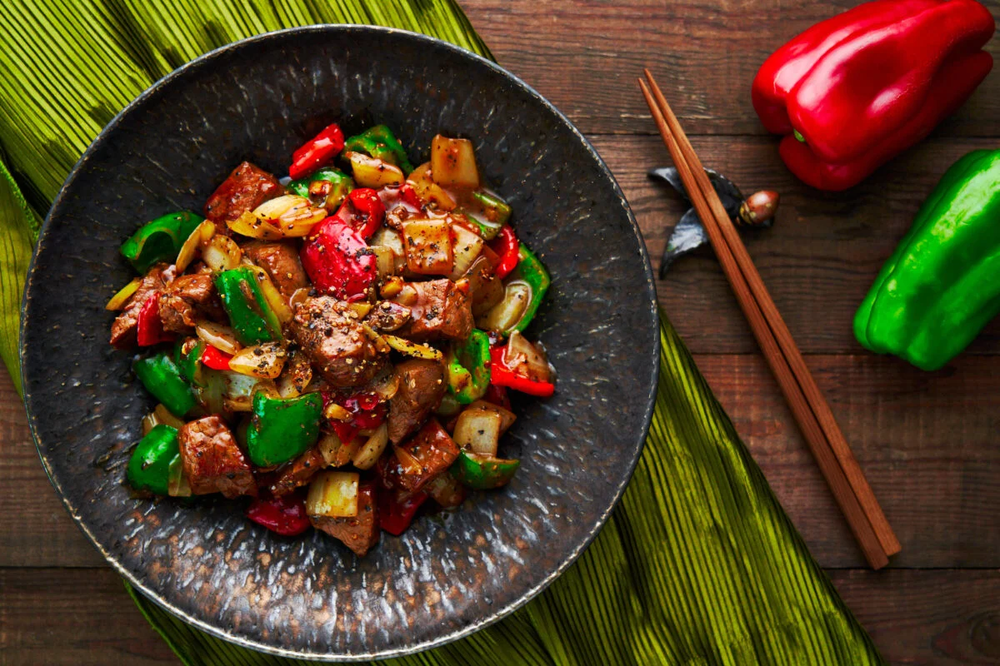

Pepper Beef

Description:
Pepper beef is a classic Chinese recipe that is incredibly simple and quick
to prepare, but packs a ton of flavor!
Ingredients:
- 12oz Beef Flank Steak
- 4 - 6 Green hot peppers (Anaheim will work)
- 1 - 2 Red medium hot peppers
- 1 teaspoon Dark soy sauce
- 1 tablespoon Light soy sauce
- 1 teaspoon Sugar
- 1 teaspoon Salt
- 1 - 2 tablespoon Shaoxing cooking wine
- 1/8 teaspoon White pepper
- 3-4 cloves Garlic
Return to Recipes Page